Chapter 3: VEGETATIONAL CHANGE. PLANT SUCCESSION AND THE CLIMAX
Chapter 5: CYCLIC VEGETATIONAL CHANGE
Most, if not all, data on the relative abundance of species in a given area will contain one or several correlations of species. The presence of such correlations reflects the pattern or, more usually, several scales of pattern in the vegetation. The existence of pattern in vegetation and the general factors underlying such patterns are dealt with in Chapter 7, but it is necessary to consider at this point in more detail some of the factors that are operative. These causal factors can be studied either by using the techniques available for the detection of pattern ( Chapter 9), or by the use of association, correlation, or regression techniques. The two methods of analysis are very closely linked and are only treated separately here for the sake of clarity. The causal factors are split into four sections for convenience, each section represents the level of detail at which it is studied rather than any rigid classification.
Similar or dissimilar environmental requirements
This is probably one of the fundamental reasons for negative or positive relationships that exist between species. On a large scale and with an obvious difference of species composition in two areas such correlations between species lead to the the separation of groupings which typify a 'community' (see below and Chapter 9). On a smaller scale such relationships are rarely as obvious and usually need a careful quantitative approach to detect their existence.
An example of such an environmentally-controlled relationship is taken from an area of hummocky grassland associated with a calcareous mire. The data for Carex lepidocarpa, C. flacca and Potentilla erecta (Table 5.1) were obtained in the form of frequency, from 150 quadrats positioned by using random co-ordinates (approximately half the sample was related to a hummock). The apparent preference of Potentilla for the hummocks and conversely the preference of the Carex species for the hollows is readily tested by means of a \( \ t \)-test which shows a highly significant difference between the species. This difference is not readily visible on even a close examination of the area though an explanation in general terms is not difficult.
Table 5.1 The relation between topography and the abundance of Carex lepidocarpa, C. flacca and Potentilla erecta.
Species
Mean frequency
SE
Difference between frequencies
t
p
Hummock
Hollow
Carex lepidocarpa
3.15
5.34
0.4163
2.19
5.260
0.001
C. flacca
0.82
2.0
0.2963
1.18
3.986
0.001
Potentilla erecta
4.19
1.38
0.1967
2.81
14.264
0.001
The hollows' act as runnels for base-rich water after a period of heavy rain and the
pH of the soil is thus neutral to slightly alkaline. Conversely the tops of the hummocks are not affected by calcareous run-off and with leaching over a period of years, together with the steady accumulation of humus, have a pH of about 5.6-5.8 (slightly acidic). It is most probable that the distribution of these species is not governed directly by the pH of the soil, but by other factors which are in turn correlated with pH. The relationship between the environment is thus most easily appreciated by relating their abundance in a sample quadrat to pH. This relationship of abundance and topography obviously leads to correlations (positive or negative between pairs of species. In this example the distribution of the species is not sharply controlled by topography but merely influenced differentially by hummocks and hollows. The relationship accordingly cannot be appreciated merely by an inspection of the area.
Harper and Sagar (1953) have shown that the spatial distribution of Ranunculus repens, R. bulbosus and R. acris shows a marked correlation with drainage. They investigated the relative abundance of the species along a transect orientated at right angles to furrows and ridges in a permanent pasture. The results (Fig. 5.1) show quite clearly the differential environmental requirements of the three species, Ranunculus repens being abundant in the furrows, R. bulbosus more abundant on the ridges and R. acris showing an intermediate distribution on the sides of the ridges. Seedling establishment under experimental conditions at three levels of drainage suggest it is this part of the life cycle, i.e. germination and early establishment, which is susceptible to the drainage of the area as a whole (Fig. 5.2).
These results from a markedly variable habitat can be related to the non-random distribution of Ranunculus in more homogeneous grassland. Micro-variation of drainage will modify other nutritional factors to a greater or lesser extent, which will in turn influence the relative abundance of each species in a small area, and lead to negative correlation between them and to marked non-randomness in the population (see also Chapter 7).
Both these examples are related to micro-topography and to its effects on abundance of species either directly or, more probably, through other interrelated factors. They lllustrate how slight environmental variations can lead to the production of patterns in vegetation and to the existence of correlation or association between species. The choice of examples relating micro-topography and the distribution of species by no means excludes the importance of other variable factors which may operate, but it merely underlines the scarcity of data on such inter-relationships.
Modification of the environment by one species allowing establishment by other species
Considerable interest was aroused by the publication of a paper by Went in 1942 which demonstrated a marked relationship between the distribution of annual species and perennial shrub species in a desert area in California. His data showed a general positive relationship between shrubs and annual herbs, but a more striking relationship between annual species and dead Encelia farinosa bushes than with living bushes. This he suggested was due to the production of a toxic substance by Encelia which accordingly limited the herb population closely adjacent to a living individual bush. Gray and Bonner (1948) subsequently isolated such a substance from the leaves of Encelia. Later workers in this field have suggested other equally plausible explanations of the phenomenon in terms of the relative build-up of humus content underneath Encelia and other species of shrubs. Whatever the causal explanation (see below for a detailed account of the presence of toxic substances in plants) this work did focus attention on the relationship between an individual and its environment and the possible effects of this interaction on other species within the community.
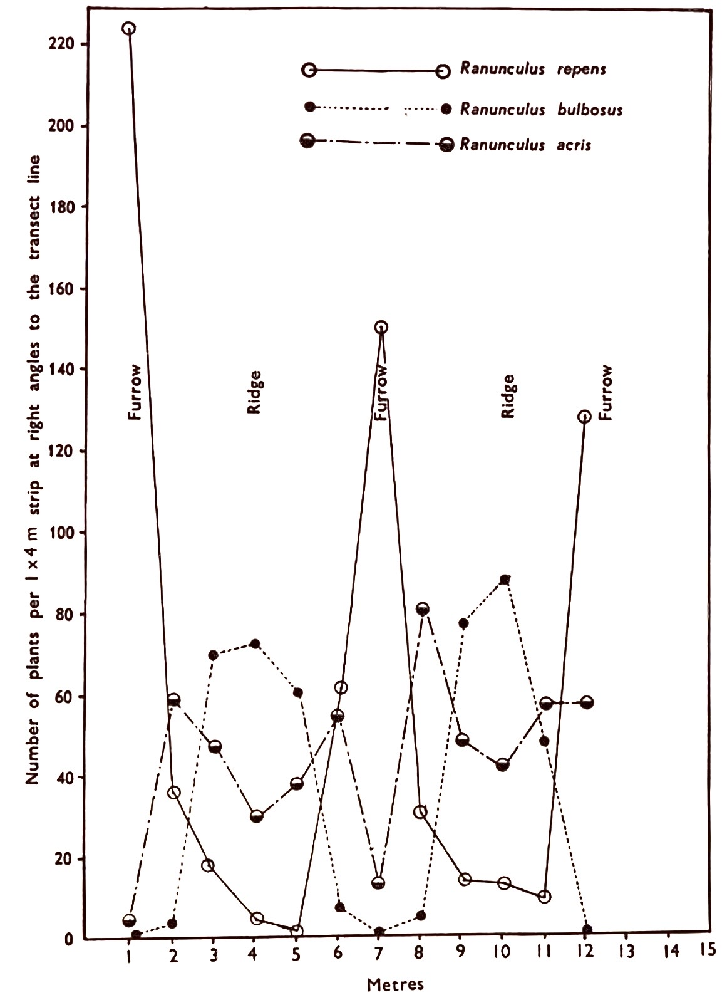
Fig. 5.1 The distribution of three species of Ranunculus on ridge and furrow grassland. (From Harper and Sagar 1953; courtesy of British Weed Control Council.)
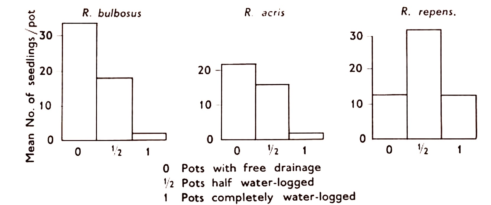
Fig. 5.2 The early establishment of three species of Ranunculus sown in pots with the watertable maintained at different levels. Sowings were made on June 26 1953 and counts made on July 28 1953. (From Harper and Sagar 1953; courtesy of British Weed Control Council.)
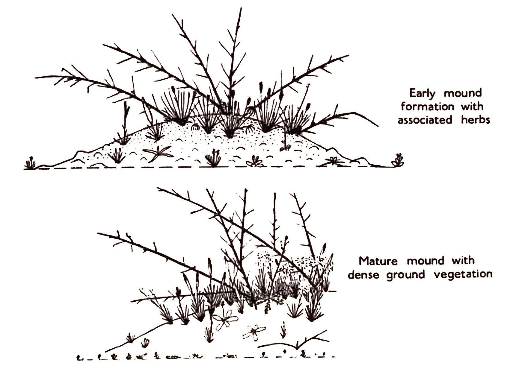
Fig. 5.3 The marked luxuriance and increased abundance of herbaceous species under Astragalus (From Agnew and Haines, 1960; courtesy of Bull. Col. Sci.)
A clear example of this type of relationship taken from stony desert in Iraq is given by Agnew and Haines (1960). There is a considerable deposition of wind-borne material round the base of perennial plants in this area, which leads to the formation of low mounds around the individual shrubs. Astragalus spinosus is an outstanding example of this and there is a marked positive correlation between this species and small annual or perennial herbs, both in the sense of abundance as well as luxuriance. A typical diagram of such mounds is given in Fig. 5.3. Astragalus spinosus is a straggling shrub with tough branches and an abundance of sharp spines which are formed from old leaf axes which have hardened after the leaflets have been shed in the summer. These axes remain firmly attached to the woody stems for several years. The relationship is explained by an interaction of several factors which in turn are related to the growth form and general morphology of Astragalus. The first important factor is the protection of the associated herb flora from grazing, which is provided by the spiny branches. This factor is of considerable importance in the Middle East where there is very heavy grazing by goats, sheep and camels even in apparently remote desert areas. Grazing will markedly affect both the luxuriance and abundance of individuals of a species. The second factor is the actual presence of wind-borne material which provides a limited area of soil capable of supporting plant growth. The desert area is largely stony and the soil mounds thus provide an excellent site for establishment and growth of herbaceous species. Further increments of debris are added annually; these include plant remains both from the Astragalus as well as from the herbaceous cover, thus steadily raising the humus content of the mounds. This has at least a two-fold effect; the concentration of soil nitrogen Is increased and enables a larger population of herbs to exist, and this in turn reduces wind velocity at the surface of the mound. The reduction of wind velocity lowers the rate of evaporation from the soil surface and in effect leads to a more efficient utilisation of the available rainfall.
Thus it is quite clear that the marked association outlined above is dependent on localized variations of several environmental factors, which in turn are related to the existence of a perennial species which has established itself in the first place. This example is clear cut since the environment is so extreme that it approaches the level below which plants cannot maintain themselves, and a slight (advantageous) shift of the environment produces a marked and a readily visible response in the vegetation. Similar relationships will hold in more temperate regions of the world, but here they are much less obvious and little is known about them at present.
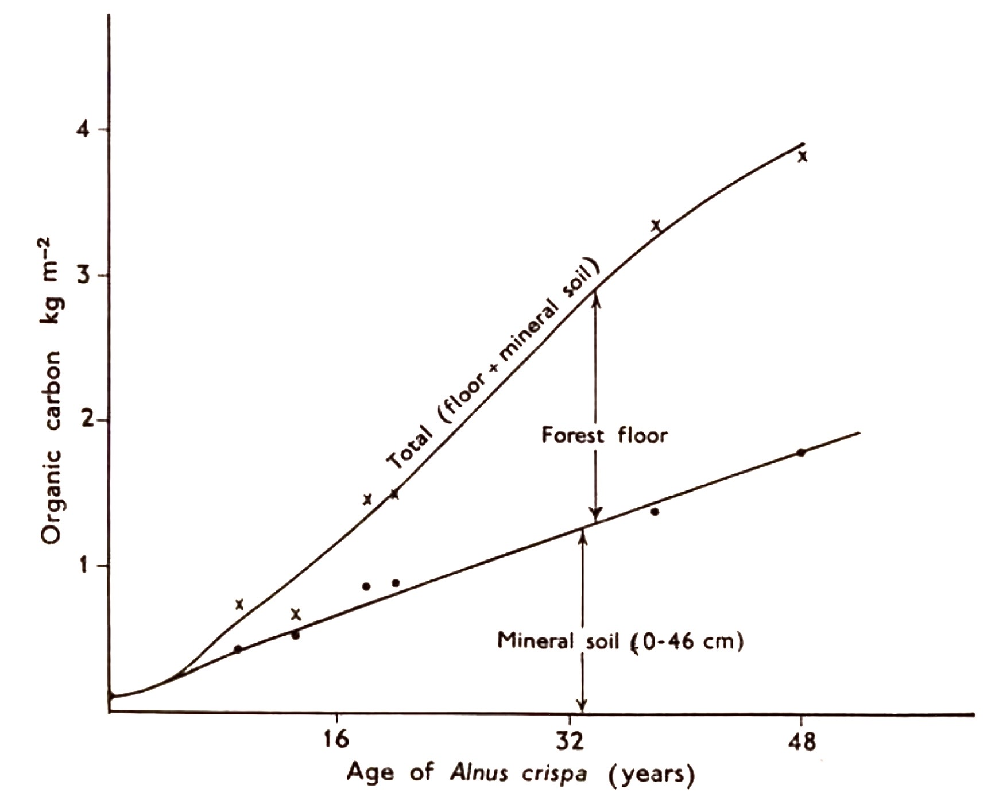
Fig. 5.4 Accumulation of organic carbon in the mineral soil and forest floor under Ainus crispa in Alaska. (From Crocker and Major, 1955; courtesy of J. Ecol.)
The fact that vegetation modifies and changes the environment to a considerable extent is largely responsible for plant succession in general (see Chapter 3). Numerous examples of environmental modification by vegetation are available (e.g. Fig. 3.6) and quantitative data are given by Crocker and Major (1955) relating the accumulation of organic carbon to the age of a stand of Alnus crispa (Fig. 5.4). This accumulation of carbon in a 50-year period and the resultant changes in the vegetation is in fact a characteristic and well marked succession (see Chapter 3). Moreover, this example illustrates the steady build up of humus material in relation to vegetational cover. The rate of build up of humus is of course also dependent to a considerable extent on climate and drainage. Thus in Astragalus the nitrogen accumulation will be relatively small, but sufficient to have an effect on the associated vegetation, which leads to the marked positive correlation of species. It is a reasonable assumption that similar effects are present in temperate herbaceous vegetation, but the relatively infrequent occurrence of strong positive association between species in this type of vegetation would suggest that such modifications of the environment are often overshadowed by environmental variations resulting from other factors.
Production of toxic substances by plants
As far back as 1832 De Candolle suggested the importance of root excretions and since 1900 considerable attention has been directed towards the detection of substances in plants which are toxic to other species. The demonstration of direct chemical interaction between species is surprisingly difficult, and much of the earlier work designed to prove an interaction between two species based on the exudation of a toxic substance can be criticized on the ground of experimental design or may be explained in terms of competition for some environmental factor.
Bedford and Pickering (1919) examined in some detail the vigour of apple trees in relation to the grass cover of an orchard. Observation showed a very marked difference between the height and fruit production of trees grown in tilled soil compared with trees of similar age grown in plots with a complete grass cover. For example a plantation of Bramley's Seedling apples established for 23 years was selected and half of it laid down to grass. In the first year the grass did not establish well but even then the season's crop was reduced by 5% (compared with the crop from the tilled section). In the next year the crop was markedly affected as fruit production was reduced by 89% following the complete establishment of the grass. Similar results were obtained in several other experiments, all of which strongly suggested the action of a toxic substance produced by the grass. This possibility was examined further experimentally. Young apple trees were grown in pots while a "surface crop' of grass was suspended above in a perforated container. Water was supplied through the surface crop which leached any toxic substance into the pot below. The resultant inhibition by the surface crop was very marked.
The results at first sight seem conclusive but the field observations can be explained in part by competition for nitrogen and water. The inhibition of the trees by grass cover can be almost completely eliminated by addition of nitrogenous fertilizers, together with irrigation of the orchard. The pot experiments are quite convincing, however, and one is forced to conclude that the presence of a toxic substance is probable, but under field conditions it is either destroyed by bacterial action or is absorbed by soil particles. It should, however, be borne in mind that the removal of an inhibitory effect by the addition of nitrogen and water does not necessarily prove that a toxic substance is not operative. It could be that the toxic substance produced by the grass for example reduces the root development of the apple trees and accordingly limits their ability to take up nitrogen and water. With the availability of abundant nitrogen and water the limiting effect of a reduced root system is minimal and the apparent toxic effect disappears. In other words the mechanism of competition for nitrogen and water could be through the action of the toxin.
The relationship between apple trees and surface crop illustrates clearly the variety of suggestions that can be offered as an explanation of an observed result.
The experiments have to be designed with considerable care, and the above example does emphasize the attendant difficulties in this field of research. More recent work has revealed numerous examples of inhibition of one species by another; these have been usefully reviewed by Rice (1974; 1979). Allelopathy is defined as any biochemical interaction between two plants, or a plant and micro-organisms which can be either beneficial or detrimental to their growth. Allelopathy is thus completely separate from competition which involves the removal or reduction of some factor from the environment that is utilized by another competing individual. However, the distinction between these two types of interactions, at a mechanistic level, is often difficult to achieve and Muller (1969) has suggested that the term 'interference', that includes both allelopathy and competition, should be reserved for the general case where there is an undefined but clear-cut influence' of one plant on another.
Over the last 15 years there has been a considerable level of interest in allelopathy providing numerous examples of both interspecific and intraspecific interactions and several distinct concepts are now considered to be fundamentally important. 1. The interactive effects can be directly evident either as a suppression of germination, or as a reduction of growth and performance of mature individuals. 2. Where the interaction is evident in mature plants it can be mediated directly by one plant on another or it can operate indirectly as a secondary effect. Thus the inhibition of, for example, an organism in the rhizosphere can then reduce the availability of some soil factor resulting in a subsequent restraint to the growth of a third species. 3. The source of the active inhibitory substance can be from roots as an exudate, from leaves or buds as a leachate, or as breakdown products from raw humus. In some instances the allelopathic substance can be transferred in vapour form from the source to the site of interaction. A wide range of organic compounds are involved and these have been reviewed in detail by Rice (1974) and Horsley (1977). 4. Suggested mechanisms of action were widely variable ranging from effects on cell elongation, membrane permeability, rates of mineral uptake to indirect and direct effects on plant photosynthesis.
Friedman et al. (1977) provide a classical example of sagebrush allelopathy in the Negev desert, Israel, comparable with similar examples documented in California by Muller and co-workers (see below). Experimental manipulation of established individuals or particularly Artemisia herba-alba by either severe pruning or complete removal show a significant increase in the numbers as well as the dry matter production of associated annual plants growing in the experimental plots (Table 5.2).
Table 5.2 The numbers of dry matter yields of annual plants per 0.25 m² in variously treated plots: March 1975 (mean of five plots ± standard error). (Data from Friedmann et al., 1977, courtesy J. Ecol.)
Treatment
North-facing Slope
South-facing Slope
Number of annual plants
Total dry matter (g)
Number of annual plants
Total dry matter (g)
(i) All perennials removed
7.5 ± 3.0 **
6.5 ± 2.2 **
19.1 ± 5.6 *
12.2 ± 2.4
(ii) All perennials pruned
3.2 ± 1.0 *
1.1 ± 3.2
17.7 ± 6.0 *
9.3 ± 2.4
(iii) Soil between perennials hoed
2.7 ± 0.8
1.8 ± 0.5 *
11.0 ± 3.6
5.9 ± 2.6
(iv) All perennials removed and soil between them hoed
8.7 ± 3.2 **
5.9 ± 2.8 **
12.5 ± 5.8
8.3 ± 2.6
(v) Control
1.2 ± 0.4
0.6 ± 0.2
11.9 ± 2.6
10.8 ± 4.4
Significance level of difference from control: * P < 0.05; ** P < 0.01.
Similarly tomato seeds as a test species are markedly inhibited by aqueous leachates obtained directly from twigs of Artemisia as well as by volatiles from shoots placed separately in a small beaker inside the experimental vessel (Fig. 5.5). Similarly Chou and Muller (1972) working with Arctostaphylos glandulosa var. zacaensis, one of the dominant shrub species of chaparral vegetation in California, showed that aqueous extracts from leaves strongly inhibited the subsequent elongation of the radicle following germination in a range of herbaceous plants normally associated with chaparral vegetation, particularly after fires (Fig. 5.6). Fire is a regular feature of chaparral vegetation and after the destruction of the shrub layer and presumably the source of the allelopathic substances, there is an immediate flush of germination of herbaceous species from the seed pool in the soil. This growth of herbs is gradually suppressed as the shrubs re-sprout from underground perennating organs not killed by the fire: again re-establishing the source of allelopathic leachate. However more recently Kaminsky (1981) has established that for some species at least the inhibition of seed germination is largely associated with the soil and not necessarily the shrub layer itself and has proposed soil micro-organisms as the source of the active toxin. The evidence is derived from a number of experiments designed to interrupt or promote the activity of soil fungi or bacteria, and shows that indeed the soil toxicity appears to be the result of soil micro-organisms. These organisms produce substances that are in sufficient quantities in the soil to account for significant reductions in seed germination and seedling growth. The role of fire in fact is to suppress soil microbial activity bringing to an end, temporarily, the inhibition of seed germination.
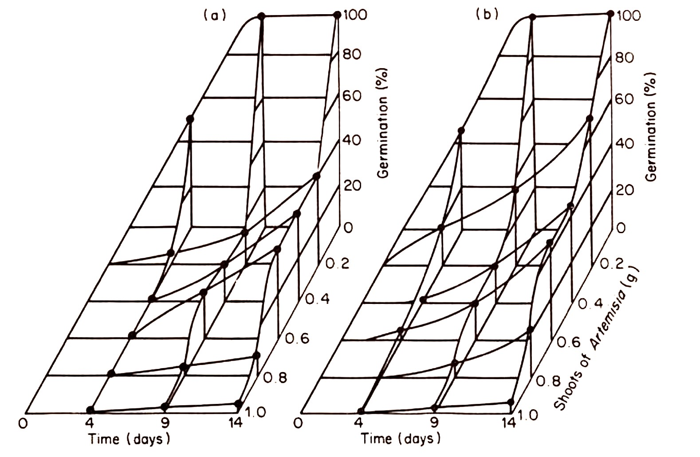
Fig. 5.5 Germination with time of tomato seeds in the presence of increasing amounts of Artemisia herba-alba shoots: (a) immersion method; (b) volatiles method. (From Friedman et al., 1977; courtesy of the J. Ecol.)
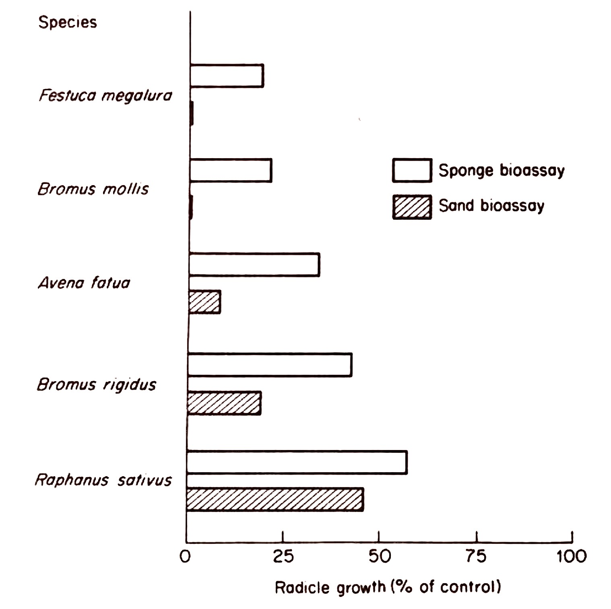
Fig. 5.6 The toxic effect of 5% aqueous extract of freshly fallen leaves of Arctostaphylos upon the growth of various species in sand and sponge biassays. Values are expressed as the percent of distilled water controls. Results of tests are significantly different from the control at 0.1% of confidence, using the \( \ t \)-test. (From Chou and Muller, 1972; courtesy of American Midland Naturalist.)
Thus, drying and rewetting soil collected from under mature shrubs, which promotes a burst of microbial activity and presumably an exudation of toxin, also represses seed germination and root elongation of lettuce when it is used as a test organism (Fig. 5.7). Furthermore 72 hours of incubation following rewetting is necessary for the toxic effects to develop, presumably in response to the build-up of the microbial population (Fig. 5.8). Treatment with chloroform vapour which strongly inhibits microbial metabolism, immediately after the potential promotion of activity by drying and rewetting the soil, largely removed the usual level of inhibition of seed germination induced by soil filtrates (Fig. 5.9). Equally an additional incubation period after removal of the chloroform vapour, restored microbial metabolic activity and the subsequent normal levels of germination inhibition.
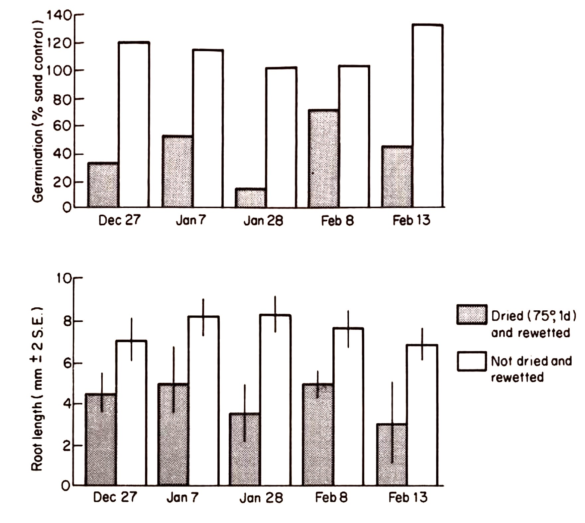
Fig. 5.7 Effects of soil drying and rewetting on the germination and growth of lettuce. (From Kaminsky, 1981; courtesy of Ecological Monographs.)
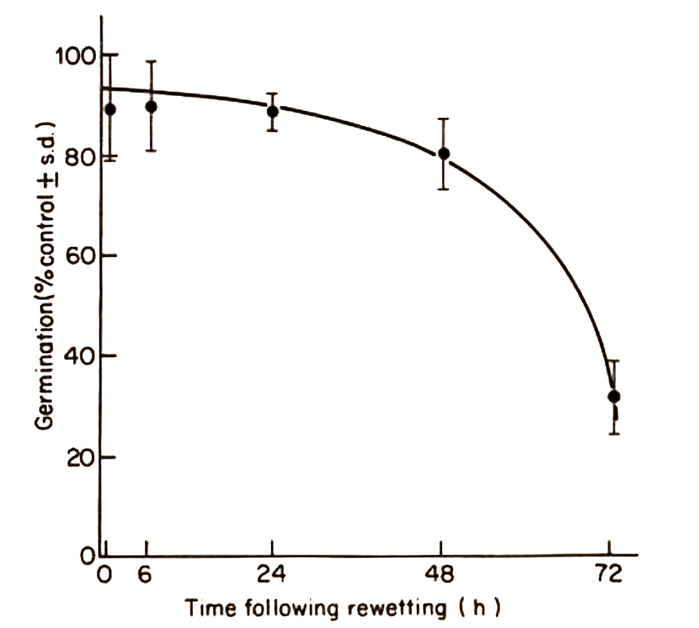
Fig. 5.8 Effect of time following rewetting of dried soil on the production of germination inhibition. (From Kaminsky, 1981; courtesy of Ecological Monographs.)
Although all cases of allelopathy in chaparral vegetation need not invoke soil microbial toxicity, these data are particularly important in that they do demonstrate both active levels of toxicity in natural soils as well as the major potential provided by soil micro-organisms for the control of herbaceous growth and performance. The role of the allelopathy in natural conditions has often been questioned when the experimental evidence for the presence of toxic substances was developed from aqueous or sand cultures. Accordingly the level of inhibition reported by Kaminsky (1981) does substantiate the realistic role of allelopathy in the replacement of one species by another under natural field conditions.
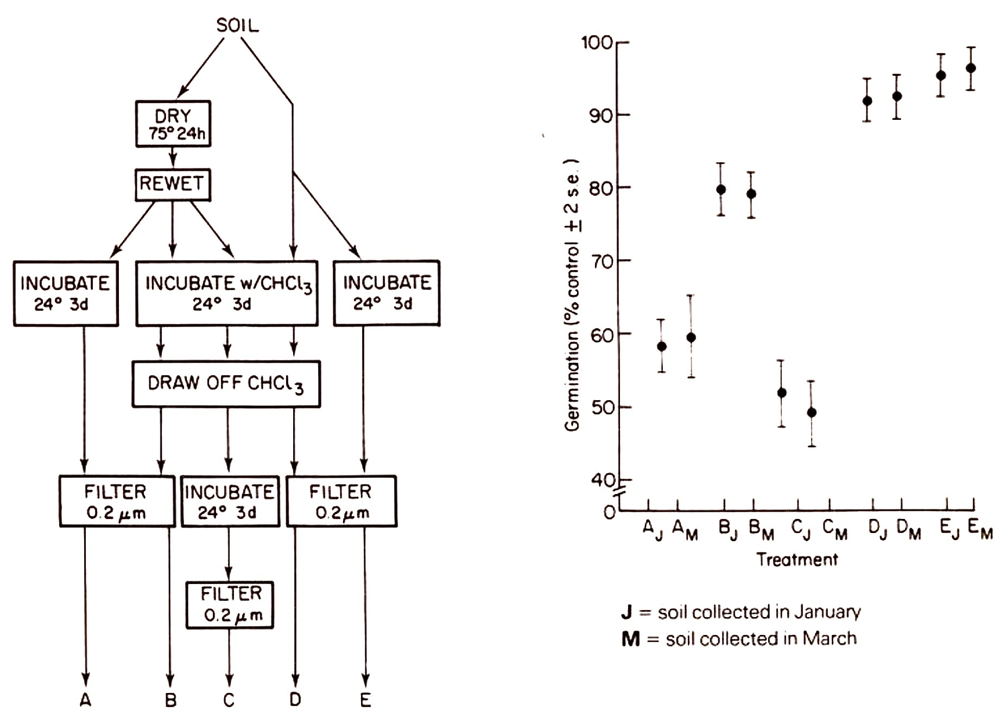
Fig. 5.9 Schematic layout of the procedures prior to, and after chloroform fumigation of experimental soil samples with the subsequent results of seed germination tests using soil leachates from the different combinations of treatments. (From Kaminsky, 1981; courtesy of Ecological Monographs.)
Table 5.3 Effects of different parts of Populus balsamifera on nitrogenase activity (\[ \text{mol C}_{2}\text{H}_{4}\ \text{h}^{-1}\ \text{(root dry weight)}^{-1} \times 10^{-11} \] ) (±SE). (Data from Jobidon and Thibault, 1982; courtesy Amer. J. Bot.)
a = Within each treatment, means followed by the same letter are not different at 0.05 level, Duncan's new multiple range test.
There has been considerable interest in the potential importance of allelopathy as a major factor in old-field succession (Rice, 1974, 1979; Sarma, 1974; Grant and Clebsch, 1975; Jackson and Willemsen, 1976; Anaya and Del Amo, 1978). Evidence suggests that direct inhibition may be involved in some instances, but Rice (1974) and Kapustka and Rice (1976) have both emphasized that the inhibition of soil biological nitrogen-fixation by the species dominating the first stages of succession is of primary importance. Similarly Jobidon and Thibault (1982) have shown that aqueous extracts of leaves, buds, and leaf litter of Populus balsamifera actively inhibits growth of Alnus crispa seedlings as well as the rate of nitrogen-fixation in the Alnus root nodules (Fig. 5.10), and particularly emphasize the difficulties of exactly documenting reaction as the causal mechanism in plant succession (see also discussion in Chapter 3). It also remains to be seen whether allelopathy also plays an important role in population demographic changes.
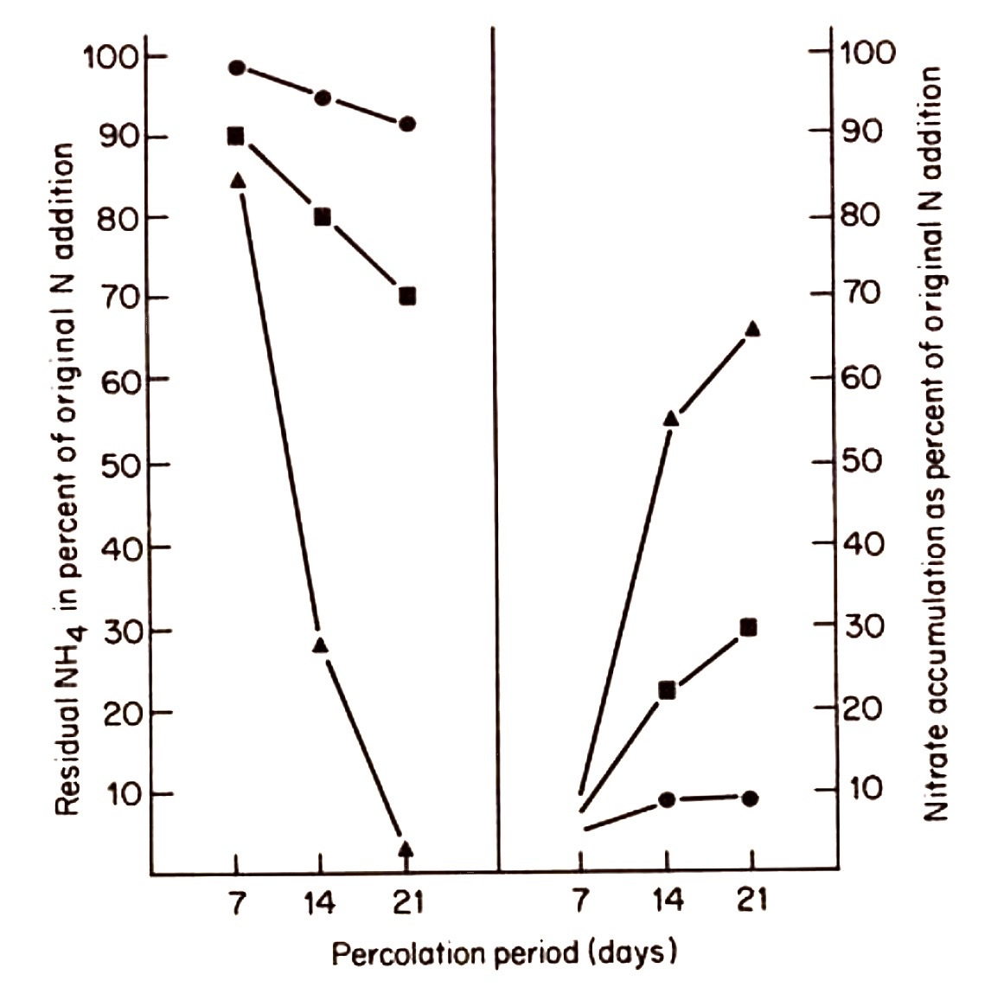
Fig. 5.10 Effect of aqueous extracts (2%, w/v) of A. balsame needles (⚫ – ⚫) and P. balsamifera dormant buds (⬛ – ⬛) on rates of nitrification in forest soils, controls (▲ – ▲) Statistical \( \ t \) values for treatments and controls indicate significant difference at P < 0.05. (From Thibault et al., 1982; courtesy of American Journal of Botany.)
Competition leading to negative and positive correlation or association
The term 'competition' is used in a wide variety of contexts with a slightly different meaning and it has been suggested that ‘interference' (Harper, 1961) be used as a general term to describe the loss of vigour and productivity of an individual due to the close proximity of another. In this context, however, the term is used to describe the struggle between individuals for some enviromental factor such as light or nitrogen, and the final effect is not one of complete elimination of one individual by another but a lowering of the performance of one of the competing members. This is usually manifested in a reduction in the numbers of a plant in relation to another species and leads to a negative correlation between the two.
Much of the detailed work on competition has been carried out under controlled conditions, since in the field it is often difficult to distinguish factors involved in competition from the other possible causes of a negative correlation. In a consideration of the effects of competition it is important to realize at which point of the life cycle competition exerts the most pressure, whether it is at the seedling stage or whether the effect is over a longer period of time. The effect of marked competition at seedling stages is usually of greater importance in relation to the actual numbers of plants which survive to maturity. Reduction in numbers of plants is more easily observed in ecological situations than the less obvious effect of reduced performance caused by the close proximity of a competitor. Conversely, in an agricultural or horticultural field, performance and yield are of paramount
importance and are related both to plant numbers as well as to the general level of performance of the crop.
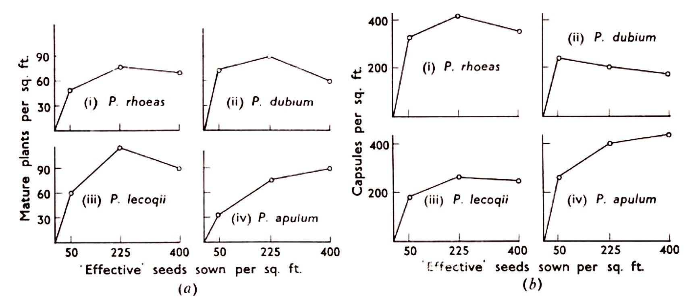
Fig. 5.11Competition between individuals of the same species, as expressed by number of mature plants per square foot (a), and capsules per square foot (b), in plots sown with different densities of seed. (From Harper, 1960; courtesy of Blackwell Sci. Pub.)
Fig. 5.12 Reduction of individual plant weight by competition between individuals of Trifolium sub-terraneum at different densities and at different times from sowing. (From Harper 1961; courtesy of Cambridge Univ. Press.)
An example of the competition between individuals of the same species is given by Harper (1960) who investigated the numbers of mature plants of four species of poppy in sample plots; the numbers resulted from different densities of sown seed. The results (Fig. 5.11) show a clear decline in the number of mature plants relative to the rise in the density of seeds per plot. The density of sown seed produces a corresponding reduction in the number of capsules per plant produced by the mature plants. Similarly Donald (1951) (see also Harper, 1961) gives data relating the plant weight of Trifolium subterraneum to the density of sowing at successive dates ( Fig. 5.12). At the time of sowing individual plant weight is of course not dependent on density, but as the plants develop those at the highest density compete for available nutrients and light and show a reduction of plant weight. This effect is seen earliest at high densities but is apparent at progressively lower densities as time goes on and the plants grow larger. These examples show quite conclusively the dependence of plant numbers and their performance on initial density of seeds and on the density of mature individuals respectively.
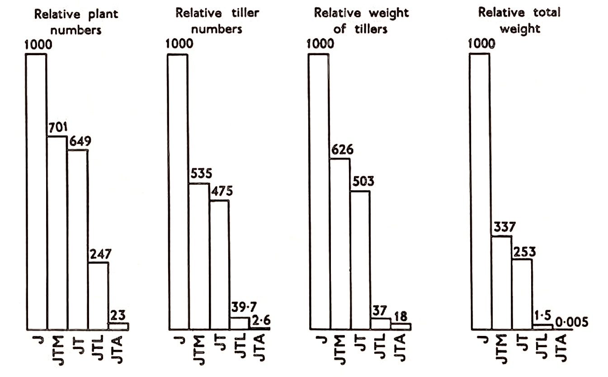
Fig. 5.13 Relative plant numbers, tiller numbers, weight per tiller and total weight of Juncus effusus developed with different companion species during 18 months' growth. (From Lazenby, 1955; courtesy of J. Ecol.)
Data showing the effect of different species on the survival of Juncus effusus seedlings at different levels of soil fertility are given by Lazenby (1955). Five combinations of species were used: Juncus growing alone (J), Juncus, Molinia caerulea, and Trifolium repens (JTM), Juncus and Trifolium (JT), Juncus, Trifolium and Lolium perenne (JTL) and Juncus, Trifolium and Agrostis tenuis (JTA). The results are summarized in Fig. 5.13 and all show a marked reduction of both the numbers of plants as well as the performance of Juncus in all the competitor combination used, and at all nutritional levels. Lazenby suggests that the important effects are on the early seedling stages of Juncus since its seeds require light before they will germinate. Accordingly those species which form a very close sward inhibit germination to a considerable extent.
The examples discussed above are all taken from experiments performed under fairly well controlled environmental conditions, but they all demonstrate the sort of ettect which can be expected in natural vegetation. Well documented examples from natural vegetation are few and perhaps the most informative data are those relating to the interactions between a tree canopy and the ground vegetation. It is sometimes assumed that the paucity of vegetation beneath trees is a direct result of the low light intensity that prevails at ground level for most of the growing season. This is by no means always correct. Watt and Fraser (1933) examined this relationship in a Pinus sylvestris woodland with a ground flora dominated by Deschampsia flexuosa and Oxalis acetosella, and related the abundance and vigour of these two species to competition with the tree roots for some nutrient factor, possibly nitrogen. The experimental layout consisted of a series of plots surrounded by trenches, which severed tree roots and isolated the herb layer from competition with tree roots at different depths. Five trench depths were used 2.5-5 cm (raw humus), 8-10 cm (raw humus cut to its entire depth), raw humus plus 10 cm of mineral soil, raw humus plus 20 cm of mineral soil, and raw humus plus 33-45 cm of mineral soil. In addition a control plot, and a series of plots which were not trenched but to which distilled water or nitrogen were added, were also sampled. The plots were sampled prior to trenching and for two years subsequently, after which the experiment was discontinued. The samples were oven dried and the results expressed as percentages of the original crop in each plot. The maximum rooting depths of Deschampsia and Oxalis were observed to be approximately 60 cm and 8 cm respectively. The majority of the Pinus roots were confined to a depth of 8-20 cm. A similar series of experiments were also conducted under beech canopy in an adjacent wood.
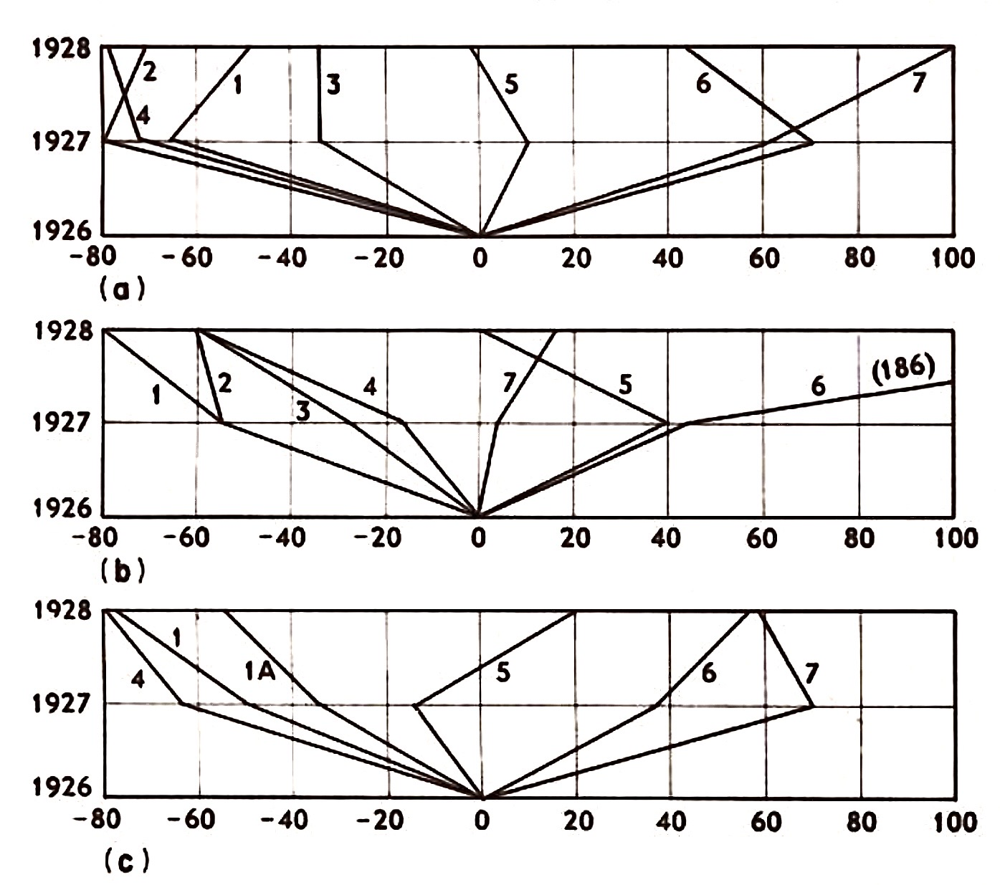
Fig. 5.14Percentage increase or decrease in the weights of the original field layer of Deschampsia flexuosa under pine (a). Oxalis acetosella under pine (b), and O. acetosella under beech (c). The treatments were: 1. Control. 2. Distilled water added. 3. Raw humus cut 2.5-5 cm. 4. Raw humus cut to surtace mineral soil (8-10 cm). 5. Raw humus plus 10cm mineral soil cut. 6. Raw humus plus 20cm mineral soil cut. 7. Raw humas plus 33-45 cm mineral soil cut. (From Watt and Fraser, 1933; courtesy of J. Ecol.)
The results are summarızed in Fig. 5.14 below. In assessing these results note must be taken of the annual reduction of the plot herbage caused by the actual harvesting. However, they do allow several preliminary deductions to be made. Firstly, the addition of water had no effect on either Deschampsia or Oxalis (Fig. 5.14, a2 and b2). Secondly, the cutting through the humus and 10 cm of mineral soil and through the main roots of the trees enables both herb species to hold their own and probably in the absence of harvesting they would have actually benefited. Trenching to greater depths shows a general increase in crop weight (Fig. 5.14 (6) and (7)). The addition of nitrogenous fertilizers gave mixed results, Oxalis showed no change when the rates of application were small but was completely eliminated by the larger dosage. However, Deschampsia benefited from small doses although the largest dose had an adverse effect. Thus it appears that nitrogen may be one of the important factors for Deschampsia at least, which is limited by tree root competition. Other possible effects of the trenching which should also be noted are that the subsequent death and decay of the severed tree roots would increase the level of nutrient in the soil to a slight extent and also that the decay of the roots would allow greater rates of oxygen diffusion along 'channels' once filled by the roots. The increase in vigour of the herbaceous vegetation is sufficiently large to suggest an increased benefit which is greater than these two possibilities would provide. It is remarkable that the most marked effect on both herb species is at the maximum depth of trenching even though Oxalis, for example, has a shallow rooting system.
The inhibition of a stand of trees by the ground vegetation is perhaps, at first sight, surprising, but is a well-known factor in the establishment of certain tree crops and offers a further example of what has been interpreted as competition. One of the more valuable crops planted by the Forestry Commission is Sitka spruce (Picea sitchensis), as its yield of timber is high. Early trial plantings showed that spruce planted in Calluna, though establishing fairly well, was immediately 'checked' in its growth. Addition of basic slag, as a source of nitrogen and phosphorus improved growth initially, but did not prevent the final onset of checking'. The experimental plantings included some mixed stands of Sitka spruce and Scots pine and it was noted that the growth of spruce was greatly assisted by the presence of pine. Weatherall (1957) gives data comparing two stands of equal age (Table 5.4) which show quite clearly an increased growth after 10 years which is even greater after a longer period of time (Table 5.5).
Table 5.4 Comparison of Sitka spruce pure and in mixture with Scots pine at 10 years of age. (From Weatherell, 1957; courtesy of Quat. J. Forestry.)
Pure plantation (Sitka spruce)
Mixed plantation (Sitka spruce and Scots pine)
Mean height spruce (cm)
Mean growth 1937 (cm)
Mean height spruce (cm)
Mean growth 1937 (cm)
Not manured
55
3.6
73
10.4
Basic slag applied shortly
after planting
79
8.6
98
16.8
Table 5.5 Comparison of Sitka spruce pure and in mixture with Scots pine at 12 years of age. (From Weatherell, 1957; courtesy of Quat. J. Forestry.)
Pure plantation spruce
Mixed plantation spruce and pine
Mean height (cm)
Mean growth 1939 (cm)
Mean height (cm)
Mean growth 1939 (cm)
Not manured
61
4.3
98
16.3
Basic slag applied after
planting
95
7.1
128
17.8
This use of a 'nurse' crop is now standard practice. Japanese larch is more commonly used than pine, and the apparently beneficial effect of one tree species on another is related to the presence of Calluna vulgaris as a dominant species of the ground layer. Observations show that the roots of spruce growing adjacent to Japanese larch tend to be very much more developed under the larch than in the area dominated by Calluna and tend to run in the larch needle litter, only rarely descending into the mineral soil. Japanese larch very effectively suppresses Calluna and concurrently with the removal of this competition spruce will grow at a greater rate than a pure stand which only slowly suppresses Calluna. It seems likely that the roots of larch and spruce occupy different levels in the soil and accordingly any competition between them is minimized. The effect of Japanese larch as a nurse crop is well marked (Table 5.6), the height of spruce being doubled over a period of 13 years. The beneficial effects of basic slag suggest that nitrogen (the addition of calcium accelerating nitrification) or phosphorus or both are possible requisites in the competitive interaction between spruce and Calluna; however, other factors may well be involved.
Table 5.6 Height in metres of various species mixtures after 13 years.
(From Weatherell, 1957; courtesy of Quat. J. Forestry.)
Height of spruce (m)
Crop
Complete ploughing
Single furrow ploughing
Three rows of spruce alternating with two rows of Japanese larch
4.02
3.78
Sitka spruce plus broom
4.05
2.74
Two rows of spruce alternating with two rows Scots pine
2.87
2.59
Alternating rows of spruce and pine
3.20
3.23
Two rows of spruce alternating with single row Scots pine
2.29
2.59
Pure stand spruce
1.83
1.83
Thus Handley (1963) interprets the interaction between Calluna and Picea abies as being due to the inhibition of ectomycorrhizae which are essential to the growth of spruce. Robinson (1972) demonstrated subsequently that indeed run-off from roots of living Calluna vulgaris on the raw humus formed by this species contained a factor toxic to several mycorrhizal fungi in culture. As a result the interpretation of Weatherell (1957) that root-competition' is responsible for the checking of growth in spruce is probably incorrect. An allelopathic interaction operating on the root ectomycorrhizal systems that are particularly important for phosphorous uptake, is potentially a more likely mechanistic explanation.
The relationship between the ground layer and tree layer outlined above demonstrates a presumed competition between the two life forms. None of the results is conclusive and the same difficulty exists in attempting to relate the observed effect with a causal mechanism. That is to say, it seems a reasonable assumption that the observed increase in vigour in these instances is directly related to the removal of competition, but it can be argued that an identical effect would be produced by the removal of the source of an inhibitory substance. This is the converse of the problem outlined above (see previously); when the results of controlled experiments are extrapolated into field conditions the definition of causality is immediately open to several explanations unless the data are obtained by extremely critical sampling of both vegetation and environment coupled to an extensive factorial experimental design.
Due to the time factor, such sampling presents considerable difficulty, even if one assumes that soil analyses can be done to the required order of accuracy; this latter difficulty at the moment appears insurmountable.